# install package
remotes::install_github("finddx/composer")
# load package
library(composer)
# run app
run_gui()This article introduces the composer app, which is an easy-to-use web app for building and analysing composite indicators. {composer} has been built as part of a project with FIND, a global non-profit connecting countries and communities, funders, decisionmakers, healthcare providers and developers.
An app for what?
Composite indicators are all around us, but unless you’ve been deeply embroiled in international statistics, you may never have heard of them. So let’s start at the beginning and talk about indicators first.
Indicators are used in many contexts, and you may have heard of “key performance indicators” (KPIs) and sustainable development indicators, among other examples. Without agonising over definitions too much, indicators are things we can measure, that indicate the state of something we are interested in. For example a, KPI can indicate the performance or progress of a project or spending programme. Sustainable development indicators indicate the progress of countries towards the UN’s sustainable development goals. And so on.
Notice that indicators are different from direct measurements. If we want to know how hot it is outside, we can measure the temperature directly with a thermometer. Indicators are used instead where we cannot directly measure the concept we are interested in, usually because:
- It is multidimensional
- It is not precisely defined
In general we can say that indicators are used to measure complex (often socioeconomic) multidimensional concepts, with the aim of prioritising resources and interventions, and also to track progress and raise awareness. In the international/policy context, indicators are often used to compare countries and/or sub-national regions, but indicators can be used to compare/measure universities, businesses, or even individuals. We’ll refer to the things we are comparing with our indicators as units in many places in this article.
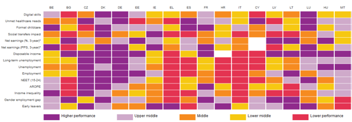
In most cases, indicators come in groups, attempting to measure different aspects of performance, development, etc. Groups of indicators are called “scoreboards”, or “dashboards”, depending on your favourite terminology. However, when we get beyond a small number of indicators, it can be increasingly difficult to make sense of the information, especially when the dashboard regards multiple countries/units.
Composite indicators
Enter composite indicators. Composite indicators are mathematical aggregations of a set of indicators into a single measure. They effectively act as summary measures of the indicators within a dashboard or scoreboard, and facilitate quick and easy comparisons, clear communication with stakeholders, and act as a natural entry point to the data set underneath. Well-known examples of composite indicators include the Human Development Index, the Global Innovation Index, and many others. Composite indicators are often built based on conceptual framework, which maps indicators into dimensions and sub-dimensions.
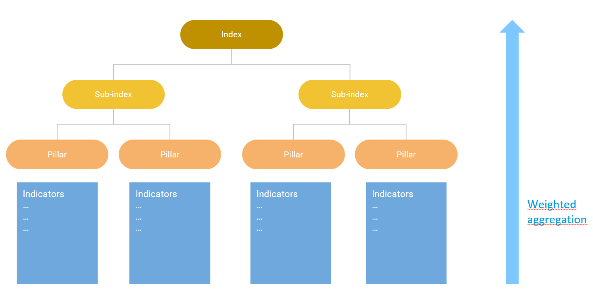
In the context of FIND, indicators are used to better understand where there is the most need to direct resources, for example which countries are most in need of funding, and for which type of medical diagnostics. In this context, composite indicators can also provide an important overview of a potentially complex set of indicators.
Importantly, in building a composite indicator, we do not wish to substitute the underlying data, but rather to complement it with an overview measure. Composite indicators involve a number of subjective decisions in their construction, and cannot fully capture all information in the indicator set underneath. However, used carefully, they are a valuable addition and entry point to a complex data set.
Steps to building a composite indicator
Building a composite indicator is not a mathematically complicated task. However, it does need care in terms of data management, and in making the methodological choices that fit with the objectives of the index. The European Commission’s Competence Centre on Composite Indicators and Scoreboards gives a ten-step approach to building composite indicators which is as follows:
- Define the concept to be measured - make a map of your concept.
- Select the indicators, keeping in mind criteria such as data availabililty, relevance, reliability.
- Analyse the data, checking the distributions and key statistics of each indicator. Treat outliers if necessary.
- Normalise indicators onto a common scale, reversing directions if needed.
- Assign weights to indicators and dimensions.
- Aggregate the normalised indicators up to the index scores.
- Check statistical coherence using correlation analysis.
- Assess the impact of uncertainties by running a sensitivity analysis.
- Make sense of the results to reveal narratives and conclusions from the data.
- Present and communicate the results to stakeholders in a clear and focused way, using graphics and key messages.
Keep in mind these steps are guidelines, and may not fit every context. But they are certainly a good place to start.
Although some of the steps in this process are qualitative, such as mapping the concept, steps 2-10 all involve at least an element of data analysis, processing and visualisation.
This is where the Composer app comes in. {Composer} is an interactive web app which walks you through the data steps of building a composite indicator, enabling fast prototyping, results and visualisation. Read on to find out more!
{composer}: a new web-app
{composer} is an web-app built in Shiny, and is hosted by FIND here. It can do the following things for you:
- Any number of indicators and units and aggregation levels
- Unit screening by data availability
- Missing data imputation
- Outlier treatment
- Normalisation using various methods
- Weighted aggregation
- Interactive maps (if the units are countries)
- Detailed analysis of indicators using bubble charts, bar charts
- Statistical analysis using visualisation of distributions, correlation plots
- Downloadable unit profiles
- Interactive reweighting
- Sensitivity analysis on assumptions, checking the effects of removing indicators and indicator groups
What composer doesn’t do:
- It doesn’t help you map your concept, as this is a qualitative task. However, it does provide a visualisation of your concept map.
- It won’t source data for you. You have to provide it with your indicator data.
- In general, it provides analysis from a statistical point of view. It cannot tell you anything about, for example, the relevance of your indicators. Because again, this cannot be inferred from the data.
Most of the data processing in the app is done using the COINr package, which is an R package for building and analysing composite indicators. However, {composer} is a convenient graphical interface which removes the need to do any programming, so it is very easy to get started! If you are an R user though, you may wish to additionally work with COINr directly to access functionalities not included in the app. And/or, since {composer} is an R package, you can download and install it, and run the app locally from R with the following command:
Before you start
We’re nearly at the point of using the app, but not quite, because you need to have a few things ready before you start! The starting point is to provide the app with an Excel spreadsheet containing two tables:
- The indicator data, containing indicator values for each unit.
- The indicator metadata, which specifies the structure of the index, initial weights, indicator names and so on.
These tables need to follow a specific format, so they require a little care to get right. However, they are very clearly explained in the online documentation, and you can also take a look at the example dataset.
When you have this spreadsheet ready you can upload it to the app and get started.
Medical Diagnostics Example
The best way to showcase the app is with an example. We’ll start with the Pathogen Diagnostics Readiness Index (PDxRI), which is a simple composite indicator of seven indicators, and measures the global readiness to deal with a set of diseases. Later we will also show an example which benchmarks countries in terms of resources.
The Pathogen Diagnostics Readiness Index (PDxRI) is a comprehensive tool and index for evaluating diagnostic preparedness by assessing the availability of diagnostics globally. The tool aims to highlight the global availability of diagnostic tools, raise awareness about existing gaps in the diagnostic technology landscape, and guide investments for the future development of diagnostic tools.
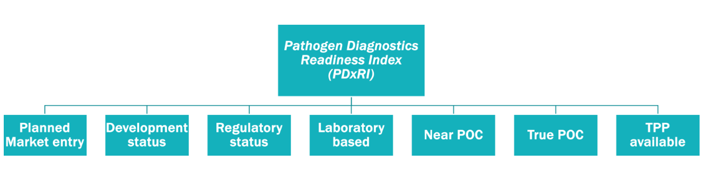
In this example, the “units” are the pathogens - therefore the purpose of the index is to rank pathogens in terms of diagnostic preparedness. In {composer}, our objective will be to reproduce the results of the index quickly in the app.
We begin by loading the data set which is available here using the Data Upload interface on the first page of the app. The example data set is already in the correct format for {composer}: an Excel spreadsheet with two tabs, containing in the indicator data and metadata tables respectively. On loading this data, the app recognises the structure of the index an returns a framework plot:
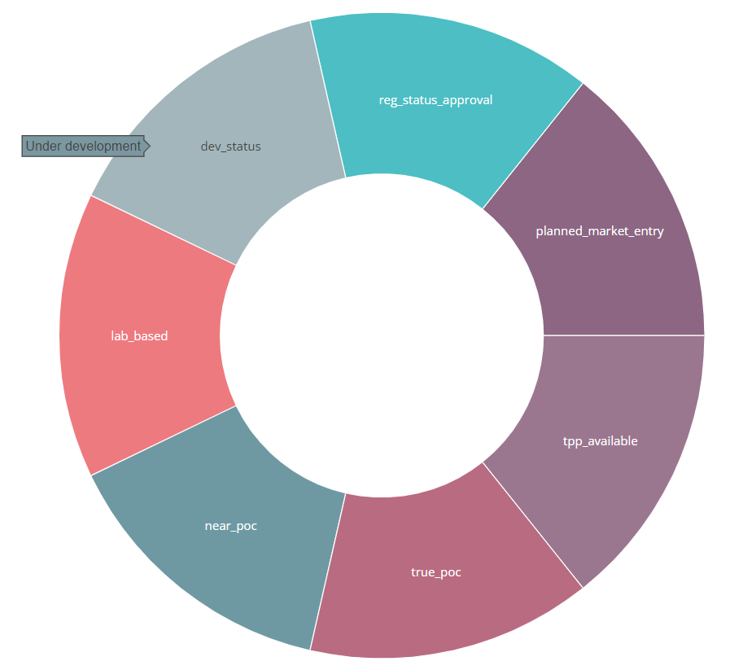
In order to reproduce the index, we follow the methodological steps as described on the index website:
- Treat outliers using Winsorisation.
- Normalise onto a 0-100 scale.
- Use the arithmetic mean to calculate the index scores.
These options are all available directly in the app. We begin therefore by treating the outliers. To do this, we go to the “Data operations” dropdown menu, and select the “Outlier treatment” tab. This tab simply gives us the option to treat or not treat outliers, using a built-in algorithm based on Winsorisation and a log transform. The results of this process are displayed via the table and summary boxes.
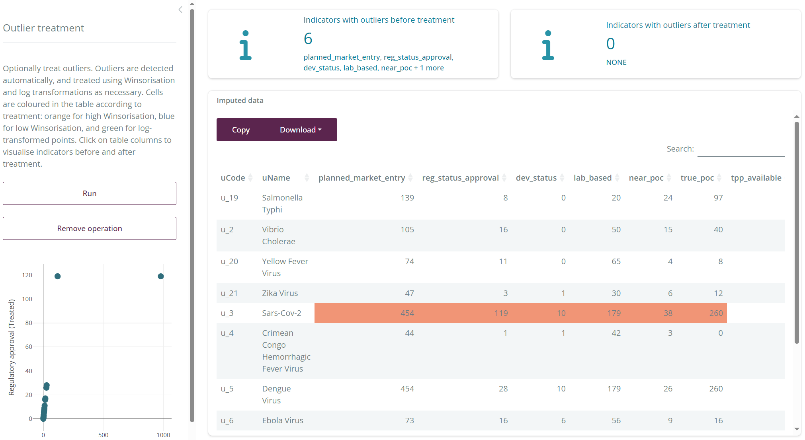
The clear outlier in this data set is COVID, which has received far more attention than any of the other pathogens, and therefore has much higher scores. As such, it is treated as an outlier.
The app works sequentially, so at this point we have now treated our outliers and can move the next operation, which is normalisation. We therefore go to the “Normalise” tab using the navigation menu at the top. To replicate the methodology we select “Min-max” normalisation, and set the min and max to 0 and 100 respectively.
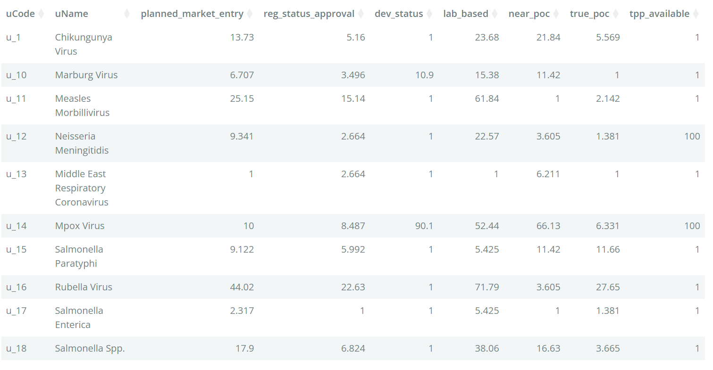
The app has now normalised each indicator using the specified min-max rule, and displays the modified data in the table. Note that the normalisation step also accounts for the directions of indicators.
Our final step is simply to aggregate the normalised scores using the “Compose index” tab. Here, we select the weighted arithmetic mean, the “original” weights (which means those specified in the input spreadsheet), and set the minimum data availability to zero since we don’t want to apply any data availability rules here.
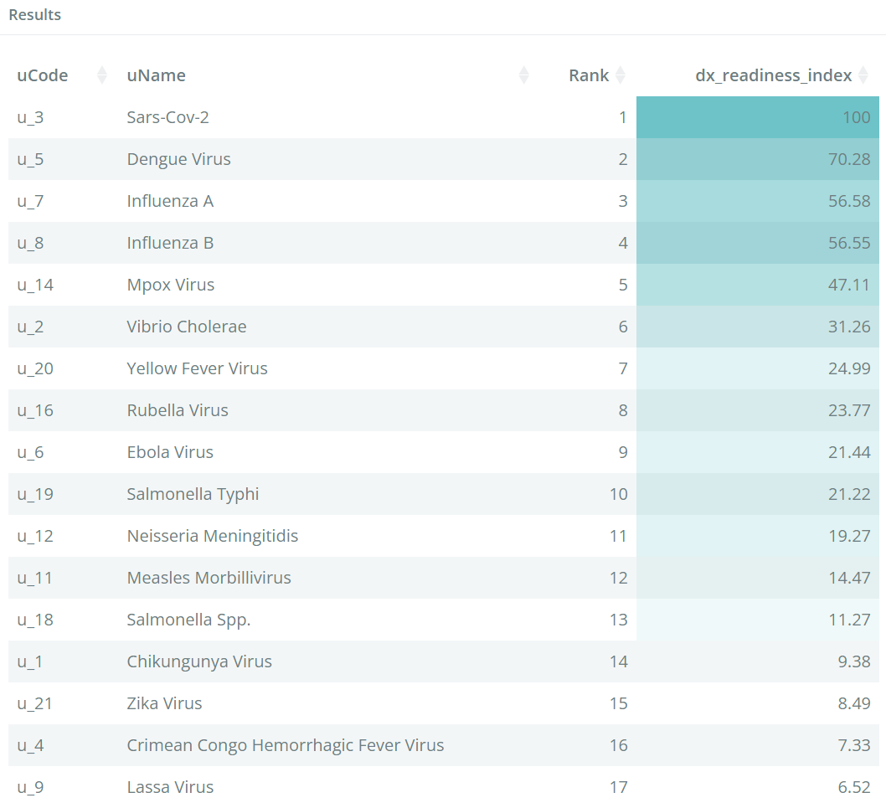
Running this produces the results table above, which is colour coded by the index scores, and exactly reproduces the results of the index (note: updates to this data set may eventually change the results).
At this point, the results of the index can already be exported to Excel by clicking on the “Save/export” dropdown in the top right. You can also export the results to R and the R commands to build the index (see later in this article).
Here we will just demonstrate a couple of further features of the app. The “Indicator statistics” tab gives us a variety of indicator statistics and plots which allow us to dig deeper into the data and the relationships between indicators:
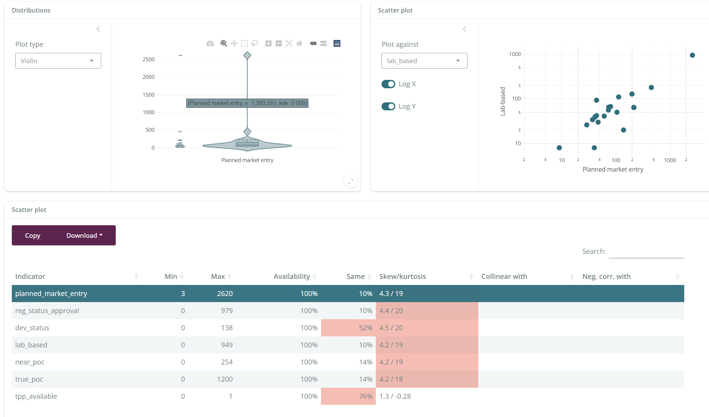
To make detailed plots of one indicator (or the index) against another, the “Bubble chart” interface provides a powerful tool for plotting bubble charts, and additionally colouring by grouping variables such as transmission mode.
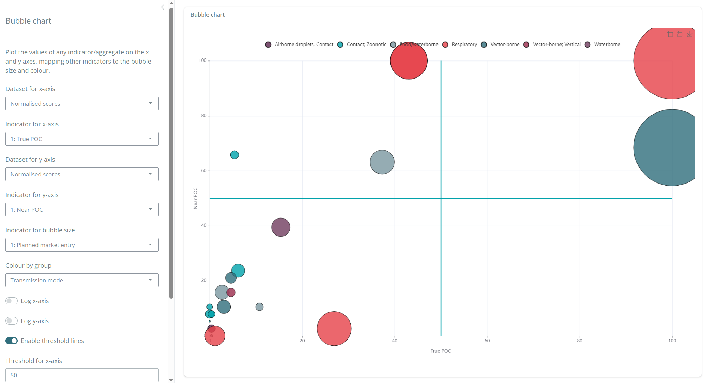
This example has shown how a composite indicator can be quickly created and analysed in {composer}. We have only explored a few of the features of the app here, but the online documentation provides a full description. In the next example we will explore some other features of the app including the possibility to build maps when working with country data.
WEF Nexus Example
The WEF Nexus Index is a national-level composite indicator which aims to measure the state of countries in terms of their resources in Water, Energy and Food (WEF). It consists of 21 indicators, organised into three dimensions and six sub-dimensions, as shown below.
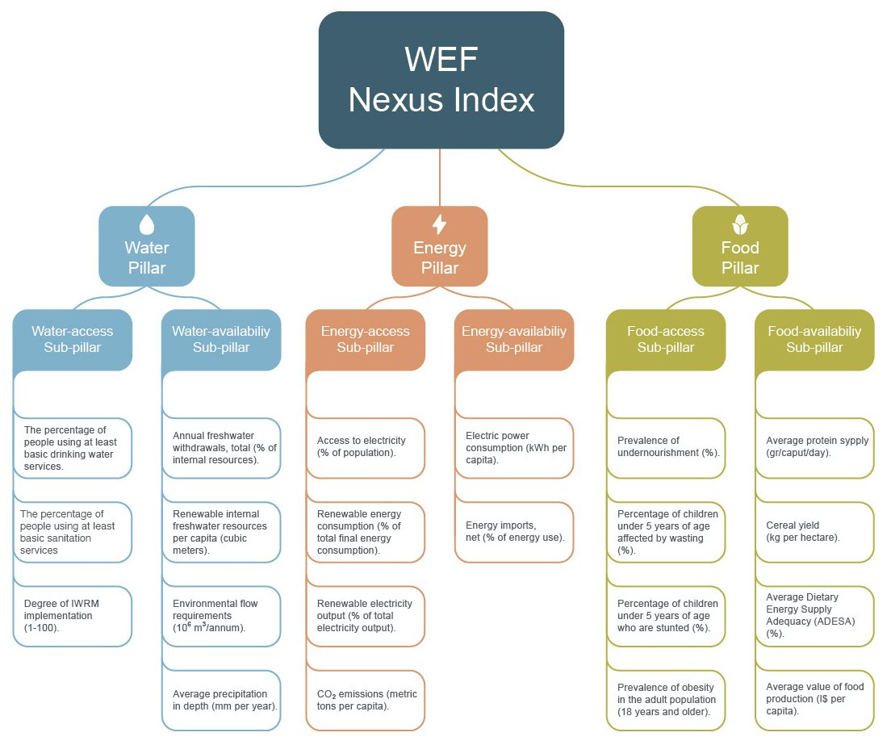
The data input for {composer}, for this index, is available to download here. Uploading this spreadsheet to the app, we get the visualisation for the framework:
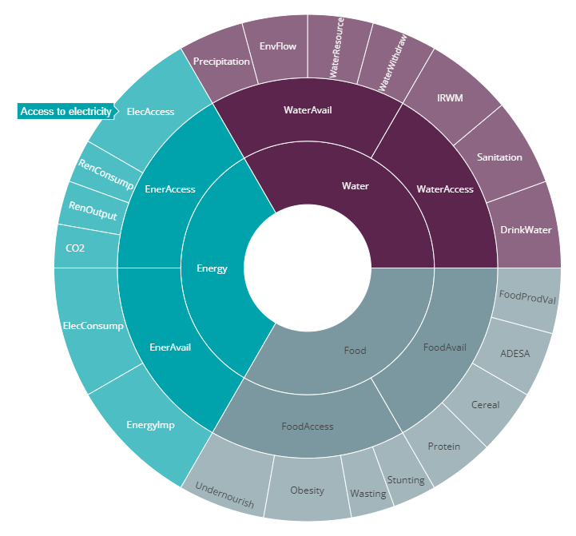
If you follow this example, you will also notice that the app recognises that we are dealing with country-level data because in this example, the unit codes are ISO alpha-3 country codes (AFG, AGO, ALB, …). This means we can visualise the results on a map later.
If we want to recreate the WEF Nexus Index from this data, we must follow these steps:
- Treat outliers
- Normalise using min-max, scaled between 0 and 100.
- Aggregate using the arithmetic mean (but with data availability threshold).
To do this, we go to the Outlier Treatment tab and click “Run”. This shows that seven indicators require data treatment, and some are log-transformed since they are very skewed. Recall that outlier treatment is applied to avoid having indicators that are dominated by some few outlying points. You can read more about this in the relavant documentation page.
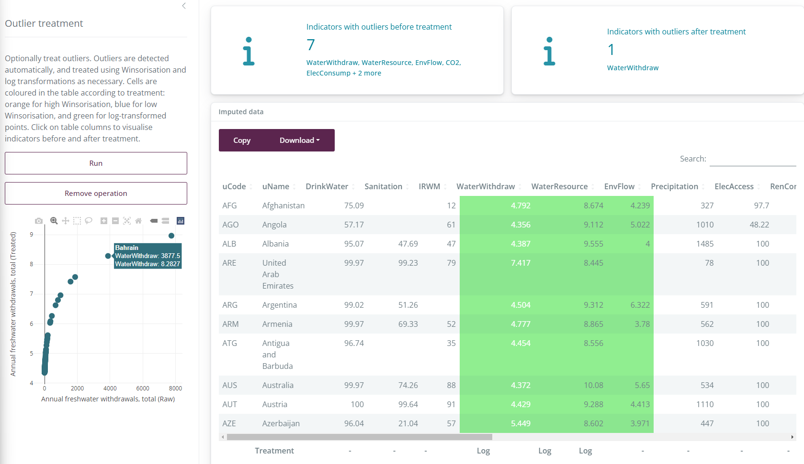
Next we go to the Normalisation tab. We select the “min-max” method, with lower bound 0 and upper bound 100, following WEF Nexus Index methodology. This now transforms all indicators onto the \([0,100]\) interval, and reverses directions where necessary. For example, the indicator “Annual freshwater withdrawals” is a negative-direction indicator (higher values are worse), and so it is flipped at this point. After normalisation, all indicators are aligned such that higher values are better.
As the final calculation step, we aggregate the normalised scores to get the sub-dimension, dimension and index scores. A recent change to WEF Nexus Index methodology specifies that for each country, it must have a minimum of 2/3 of its indicator values available with any given sub-dimension to calculate a sub-dimension score. We can replicate this by setting the “Min. data availability” bar to 0.66. Now we click “Run” to get the results.
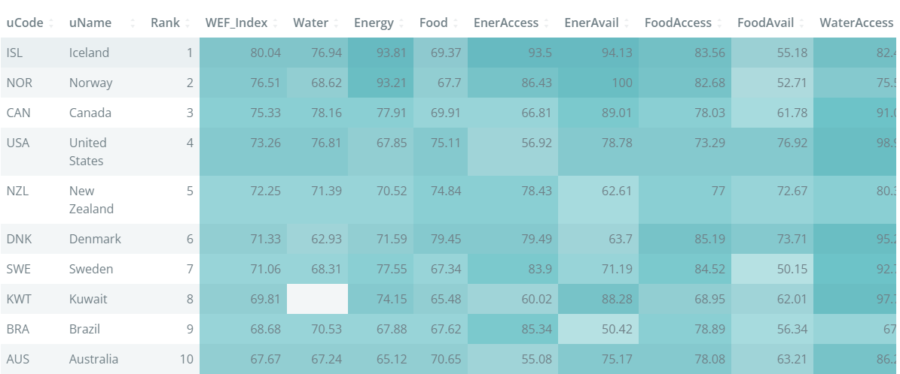
The results table shows at a glance the top countries, and the colour formatting helps to understand also why a given country is where it is. For example, here we see that Iceland is top because it has a very high energy score, both in terms of availability and access.
To explore the results in more depth we can begin by plotting the index results on a “choropleth” map.
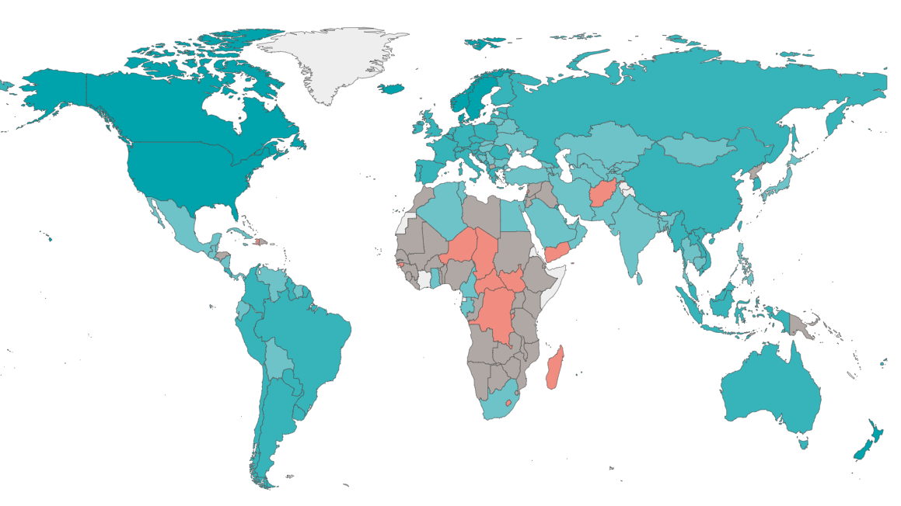
This helps to understand the geographic trends: we see that central African countries, and many in the Middle-East, seem to have the lowest scores. Remember that the mapping feature only works in the app if the unit codes are ISO alpha-3 codes.
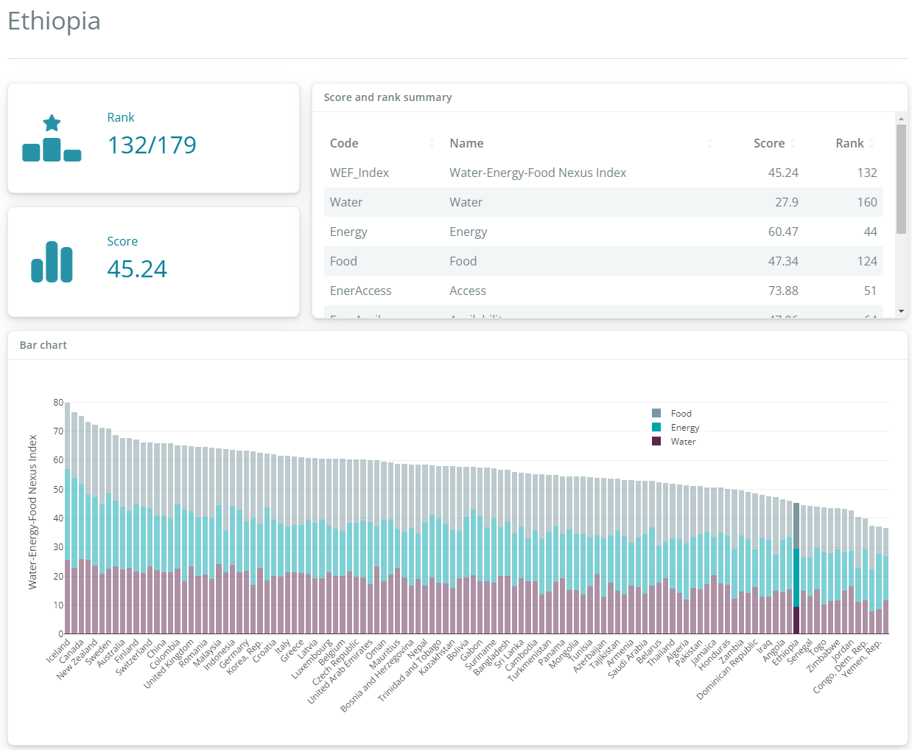
Going to the “Unit profiles” tab, we can see the scores by country. The figure above shows Ethiopia: where it lies in the global ranking, and its scores and ranks for the main index and the (sub-)dimensions.
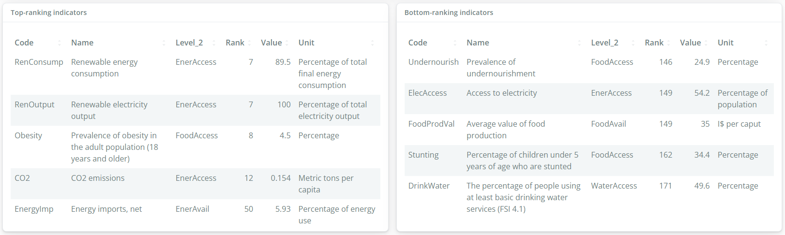
The top and bottom-ranking indicator tables also help to explain the position of each country in the rankings. Here we see that Ethiopia actually scores quite well in terms of energy indicators, and also in terms of having low CO2 emissions. However on water and food, it scores poorly in comparison to other countries.
The country profiles are important because they take us back to the underlying data, which consists of real measurements, and explains why a country may score high or low in the index.
What else?
This blog post has just covered some of the main features of the app. But {composer} actually does more! For example, in the “Save/export” menu at the top of the page, you have some very useful options:
- You can export your results, and the data as it is processed at each step, to Excel.
- You can bookmark your progress. Clicking on this link will generate a URL, which will take you back to where you left off last time!
- You can export to R, either by saving the “coin” to an RDS file, or the app will even generate a COINr script which reproduces your results in R using the COINr package!
This last point is especially useful if you need more advanced features that aren’t available in the app.
If you want to know more about {composer}, read the online documentation, and check out the source code at its GitHub repo.